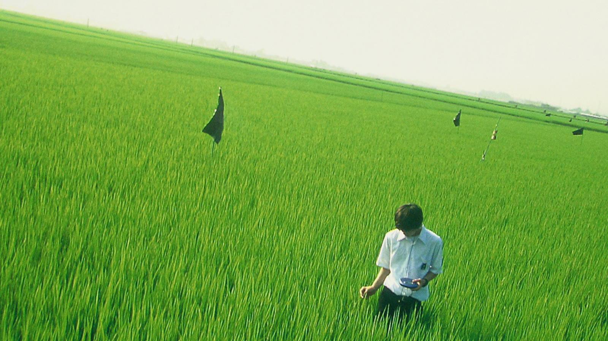
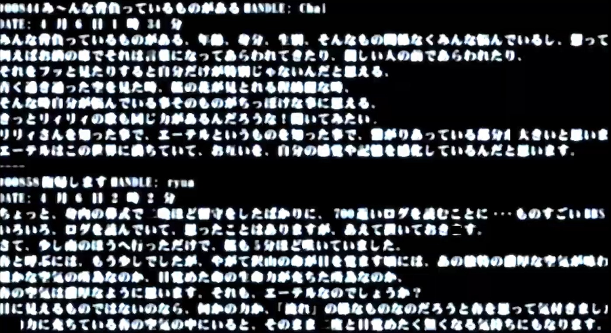
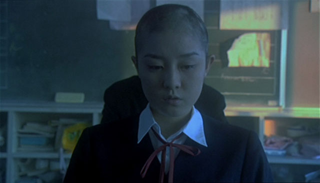
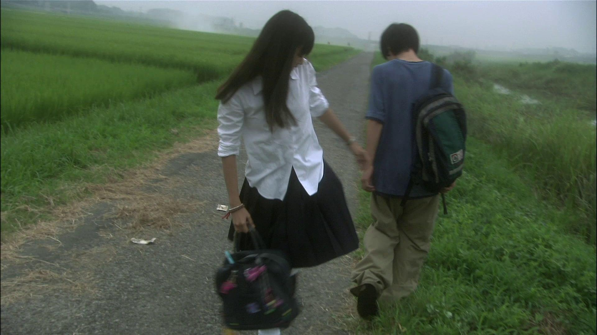
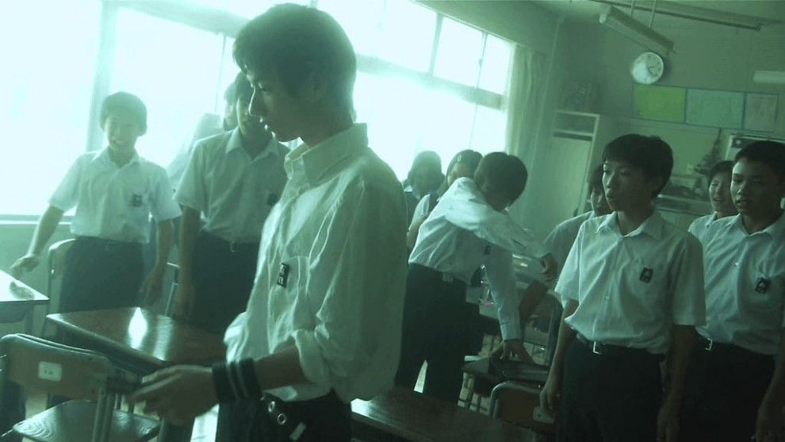
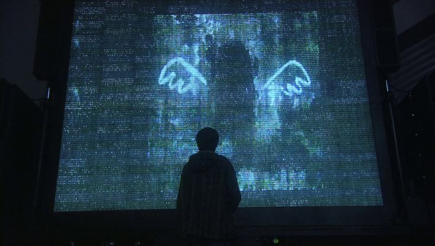

Scenes from the film — the green rice fields, the flickering BBS screens, Okinawa's blue waters, and the haunting concert finale. A visual collection of moments caught between beauty and pain.
Film Stills






> The world is grey. Everything is grey.
> But when I close my eyes and listen,
> the Ether paints everything in color again.
— Anonymous @ Lilyholic BBS